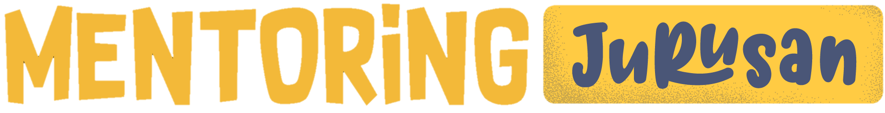

Day 2
 DAFTAR MENTORING JURUSAN!Mentoring Jurusan ini sendiri merupakan kegiatan mentoring berkelompok untuk wadah konsultasi, penanaman ilmu, dan juga pemberian motivasi kepada peserta. Akan diberikan penanaman tools time management kepada mentees dengan pengaplikasian Google Calendar, Eisenhower Matrix, dan Gantt Chart. Selain itu, juga ada sesi konsultasi ataupun sesi curhat
| Bentuk Acara | : Mentoring Kelompok |
| Waktu | : Minggu, 6 November 2022 |
| Lokasi | : Zoom Meeting |